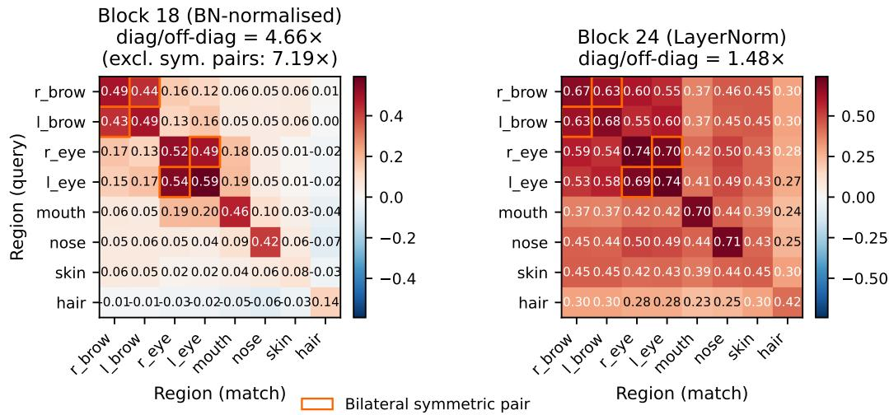
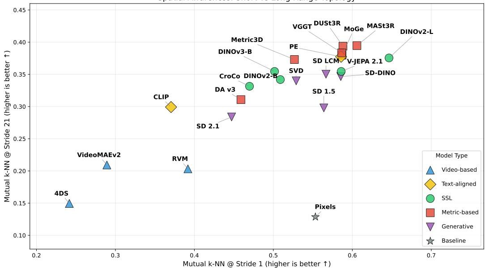

Daily issue · 2026-07-19 · CCF A/B 会议优先
7 月 19 日：Emergent Region-Level Facial Correspondence in 等视觉表征主线更新
本期聚焦通用视觉表征、视觉语言预训练与视频自监督中最值得跟进的论文，并保留 CCF A/B、OpenReview 与 arXiv 状态线索。
今天不是追新日，先不要扩展阅读清单。若昨天还没读，先读 Emergent Region-Level Facial Correspondence：它用冻结 DINOv3 patch 特征做跨身份/跨时间局部区域对应，是最直接的“自监督 ViT 是否形成 dense semantic coordinate system”证据。第二篇读 SeeSE3，它把视觉 foundation feature 的邻域结构和三维欧氏变换联系起来，比单纯 depth/normal probing 更基础。最后扫 Self-Supervised Learning as Discrete Communication，它是 ICML 2026 Poster，适合作为“连续对齐以外，视觉 SSL 能否用离散信息瓶颈组织语义”的背景，不作为今天新增。
论文索引
| 优先级 | 论文 | 类型 | 相关性 | 一句话理由 |
|---|---|---|---|---|
| 状态补录 | Emergent Region-Level Facial Correspondence in Frozen Vision Foundation Models | 周末复核；昨天 P0；arXiv new/cross 同批 | 高 | 官方页未推进，今天不重复计新增；仍是本周最值得精读的冻结自监督 VFM dense correspondence 证据。 |
| 状态补录 | SeeSE3: Emergence of 3D Space in Vision Features | 周末复核；昨天 P0；arXiv new/cross 同批 | 高 | 官方页未推进，今天只保留读法提醒；它提供 VFM latent space 与 SE(3) 拓扑/几何的诊断范式。 |
| 状态补录 | Self-Supervised Learning as Discrete Communication | OpenReview/ICML 状态核查；ICML 2026 Poster；旧 arXiv revision | 高 | OpenReview 搜索结果今天再次命中，但去重库已在 2026-06-01 记录；适合作为视觉 SSL 离散通信目标的背景。 |
主线阅读

Emergent Region-Level Facial Correspondence in Frozen Vision Foundation Models
高相关；详见方法、贡献和实验边界。
方法：官方页未推进，今天不重复计新增；仍是本周最值得精读的冻结自监督 VFM dense correspondence 证据

SeeSE3: Emergence of 3D Space in Vision Features
高相关；详见方法、贡献和实验边界。
方法：官方页未推进，今天只保留读法提醒；它提供 VFM latent space 与 SE(3) 拓扑/几何的诊断范式

Self-Supervised Learning as Discrete Communication
高相关；详见方法、贡献和实验边界。
方法：OpenReview 搜索结果今天再次命中，但去重库已在 2026-06-01 记录；适合作为视觉 SSL 离散通信目标的背景